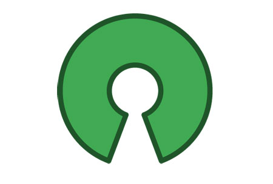
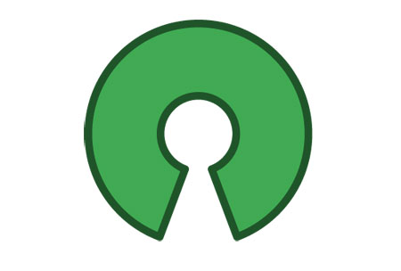
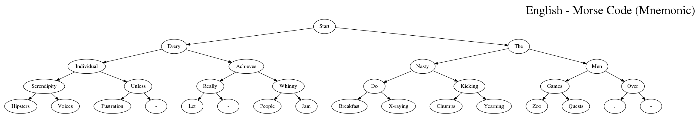
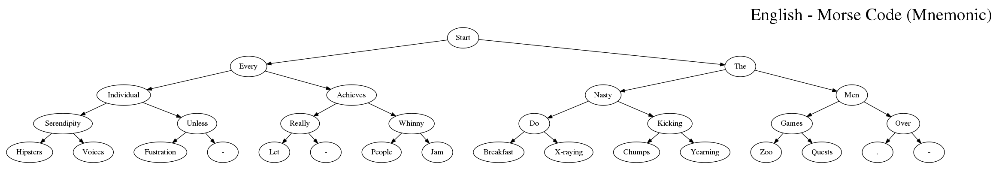
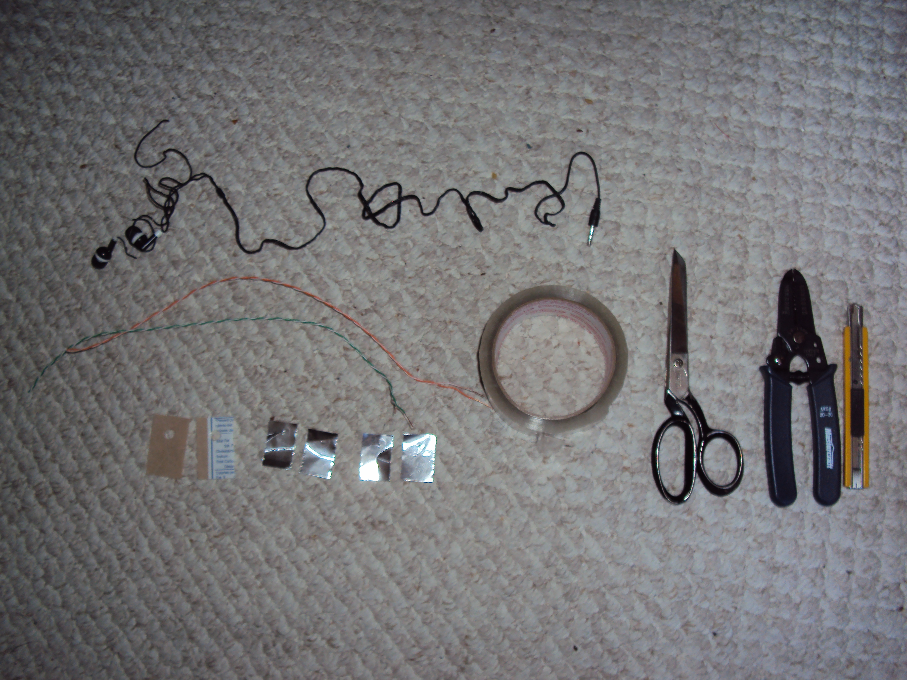
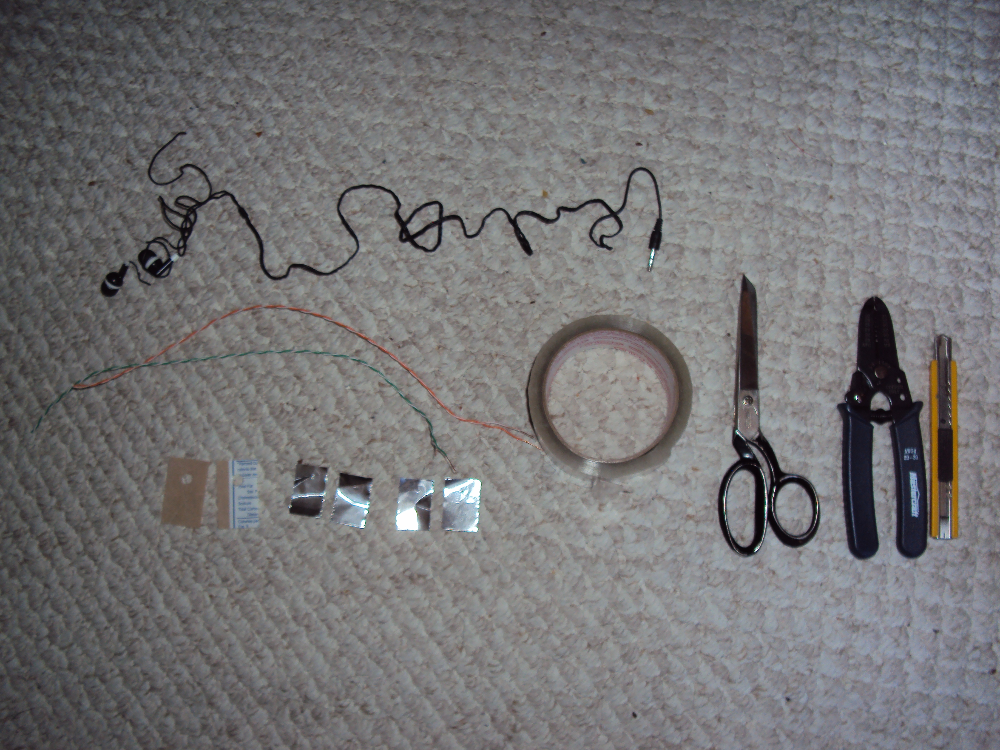

Left side: EIASURWHVF-L-PJ Every individual achieves serendipity unless really whinny hipsters voices fustration - let - people jam
Every individual attains superpowers using really wicked hip vibrations furiously - letting - people jive
Eagles idle attentively searching ugly ravens while high vortexes fluctuate - like - popping jazz
Right side: TNMDKGOBXCYZQ.- The nasty men do kicking games over breakfast x-raying chumps yearning zoo quests . -
Talking numbers means dealing kids grief only because x-ray children yell zero quips . -
The ninga master does karate grips on bad x-ray chumps yelling zealous quarrels . -
----Applications
Coupled with a cellphone, bluetooth headset, and using text-to-speech (TTS) software:
Hands-free, voice-free text messaging
Hands-free, voice-free note taking
Hands-free, voice-free music player control
Search engine searches (acquire information discreetly)
----Uses
Professions where hands are dirty, or using work gloves.
Auto mechanics
Chefs, in the kitchen during food preparations. (pulling up recipes / next orders, on electronic displays. Waiters / Waitresses
Gardeners/Landscapers
Wood-working workshops
Construction workers, factory workers
Medical personnel / staff: paramedics, nurses, doctors, surgeons, pharmacists, psychiatrists (discreet notetaking, to put patients at ease during observation)
Garbage / waste removal, janitors
Discreet messaging:
Note taking during meetings, without appearing distracted. (Secretaries)
Reporters / Journalists during live interviews
Writers
Entertainment:
Musicians, musical performers, while playing instruments (page turning of electronic music sheets on tablets)
Entertainers, Vocal performers: singers, rappers, comedians
Acting / On stage / Live performances: actors / actress, broadway
Television studio sets: News anchors, interviewers, camera operators
Sports:
Baseball, Cricket (communicating amongst players and coaches)
Sailing
Dancing (virtual dance trainer)
Mobile Gaming:
Driving simulators (gas & break pedals)
Effect pedals (audio synthesizers)
Virtual reality users (texting while in a virtual world)
Accessibility:
Blind / Visually impaired
CNIBCNIB (wikipedia)NFBNFB (wikipedia)Mobile phone input when full keyboard is unavailableChorded_keyboardKeyerHumanware
Arm amputees
Phocomelia (Thalidomide / Development of analogs of thalidomide)
Roberts syndrome
Aerospace:
Stewards / Stewardesses, Ground crew
Translators:
Word translations (dictionary look-ups), during mid-conversations

 



 



 
